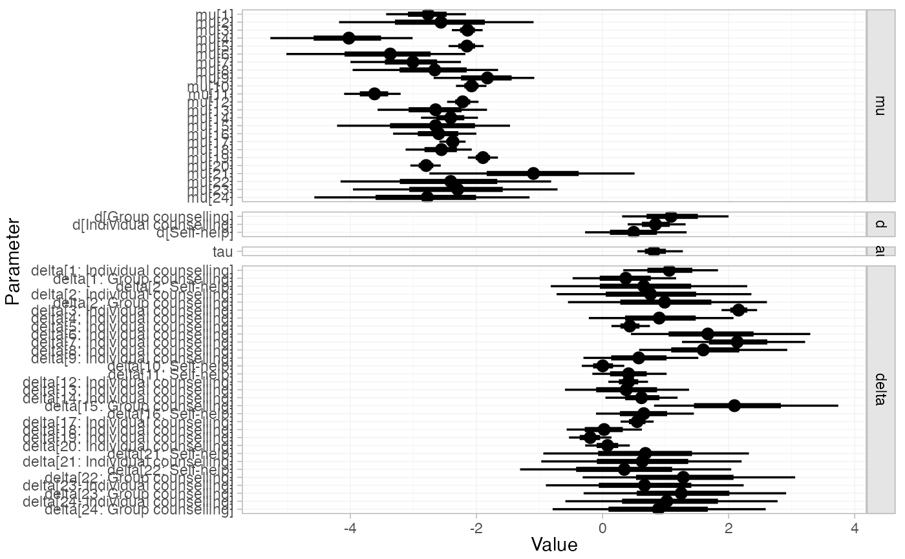
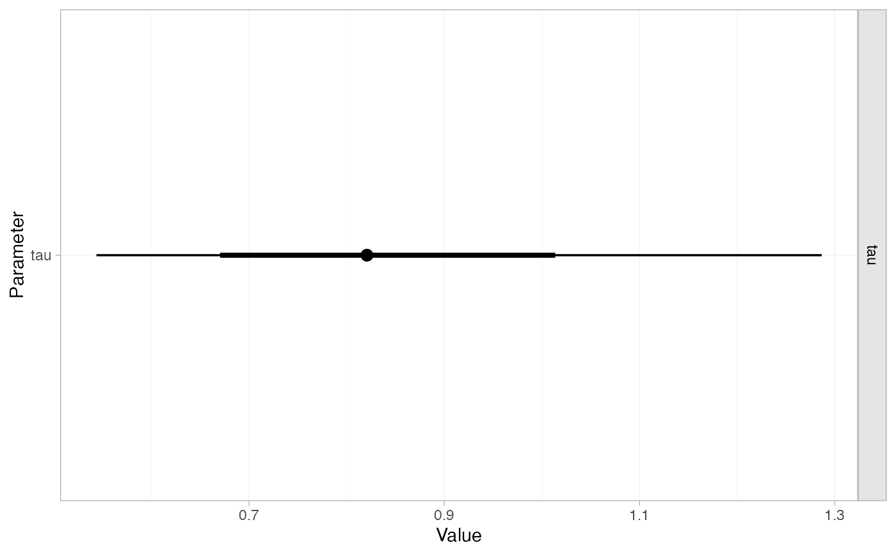
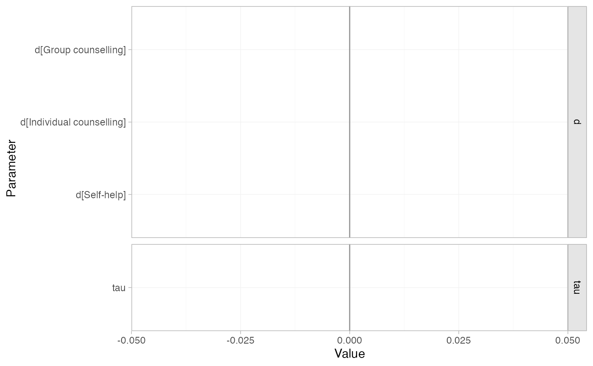

Posterior summaries of model parameters in stan_nma objects may be produced
using the summary() method and plotted with the plot() method. NOTE: To
produce relative effects, absolute predictions, or posterior ranks, see
relative_effects(), predict.stan_nma(), posterior_ranks(),
posterior_rank_probs().
Arguments
- ...
Additional arguments passed on to other methods
- pars, include
See
rstan::extract()- probs
Numeric vector of specifying quantiles of interest, default
c(0.025, 0.25, 0.5, 0.75, 0.975)- x, object
A
stan_nmaobject- stat
Character string specifying the
ggdistplot stat to use, default"pointinterval"- orientation
Whether the
ggdistgeom is drawn horizontally ("horizontal") or vertically ("vertical"), default"horizontal"- ref_line
Numeric vector of positions for reference lines, by default no reference lines are drawn
- summary
Logical, calculate posterior summaries? Default
TRUE.
Value
A nma_summary object
Details
The plot() method is a shortcut for plot(summary(stan_nma)). For
details of plotting options, see plot.nma_summary().
Examples
## Smoking cessation
# \donttest{
# Run smoking RE NMA example if not already available
if (!exists("smk_fit_RE")) example("example_smk_re", run.donttest = TRUE)
# }
# \donttest{
# Summary and plot of all model parameters
summary(smk_fit_RE)
#> mean sd 2.5% 25% 50% 75% 97.5%
#> mu[1] -2.78 0.33 -3.44 -3.00 -2.77 -2.55 -2.17
#> mu[2] -2.57 0.76 -4.10 -3.04 -2.55 -2.09 -1.09
#> mu[3] -2.14 0.12 -2.37 -2.22 -2.14 -2.06 -1.92
#> mu[4] -4.06 0.57 -5.30 -4.42 -4.02 -3.66 -3.03
#> mu[5] -2.15 0.14 -2.44 -2.25 -2.15 -2.06 -1.88
#> mu[6] -3.41 0.70 -4.94 -3.84 -3.35 -2.92 -2.20
#> mu[7] -3.02 0.44 -3.99 -3.28 -2.98 -2.71 -2.23
#> mu[8] -2.70 0.59 -3.96 -3.09 -2.65 -2.27 -1.68
#> mu[9] -1.85 0.42 -2.70 -2.12 -1.84 -1.55 -1.09
#> mu[10] -2.08 0.12 -2.32 -2.17 -2.08 -2.00 -1.85
#> mu[11] -3.63 0.24 -4.14 -3.78 -3.62 -3.46 -3.19
#> mu[12] -2.22 0.13 -2.49 -2.31 -2.22 -2.13 -1.97
#> mu[13] -2.67 0.44 -3.59 -2.95 -2.65 -2.35 -1.87
#> mu[14] -2.42 0.24 -2.91 -2.57 -2.41 -2.25 -1.97
#> mu[15] -2.67 0.72 -4.21 -3.10 -2.61 -2.17 -1.45
#> mu[16] -2.62 0.34 -3.35 -2.84 -2.60 -2.38 -1.99
#> mu[17] -2.37 0.10 -2.59 -2.44 -2.37 -2.30 -2.17
#> mu[18] -2.57 0.27 -3.14 -2.75 -2.56 -2.38 -2.07
#> mu[19] -1.90 0.13 -2.15 -1.98 -1.89 -1.82 -1.65
#> mu[20] -2.80 0.12 -3.05 -2.88 -2.80 -2.72 -2.57
#> mu[21] -1.14 0.82 -2.79 -1.66 -1.13 -0.60 0.51
#> mu[22] -2.39 0.84 -4.11 -2.91 -2.39 -1.85 -0.76
#> mu[23] -2.33 0.80 -3.96 -2.85 -2.33 -1.79 -0.78
#> mu[24] -2.81 0.84 -4.47 -3.34 -2.79 -2.24 -1.23
#> d[Group counselling] 1.10 0.43 0.30 0.81 1.08 1.37 2.01
#> d[Individual counselling] 0.85 0.24 0.43 0.69 0.84 1.00 1.38
#> d[Self-help] 0.50 0.40 -0.27 0.24 0.49 0.75 1.28
#> tau 0.83 0.18 0.53 0.70 0.81 0.93 1.25
#> delta[1: Individual counselling] 1.07 0.38 0.31 0.81 1.06 1.32 1.86
#> delta[1: Group counselling] 0.37 0.42 -0.45 0.09 0.37 0.65 1.21
#> delta[2: Self-help] 0.66 0.78 -0.85 0.16 0.65 1.15 2.27
#> delta[2: Individual counselling] 0.76 0.76 -0.76 0.29 0.75 1.23 2.25
#> delta[2: Group counselling] 0.98 0.77 -0.52 0.49 0.99 1.47 2.54
#> delta[3: Individual counselling] 2.16 0.14 1.89 2.07 2.17 2.26 2.43
#> delta[4: Individual counselling] 0.92 0.58 -0.17 0.53 0.89 1.28 2.17
#> delta[5: Individual counselling] 0.44 0.16 0.13 0.33 0.43 0.54 0.75
#> delta[6: Individual counselling] 1.70 0.70 0.48 1.20 1.65 2.14 3.20
#> delta[7: Individual counselling] 2.14 0.48 1.26 1.82 2.12 2.43 3.18
#> delta[8: Individual counselling] 1.64 0.60 0.58 1.21 1.60 2.03 2.93
#> delta[9: Individual counselling] 0.60 0.46 -0.27 0.30 0.58 0.90 1.53
#> delta[10: Self-help] 0.01 0.17 -0.33 -0.11 0.01 0.13 0.34
#> delta[11: Self-help] 0.41 0.31 -0.19 0.20 0.41 0.62 1.03
#> delta[12: Individual counselling] 0.41 0.17 0.10 0.30 0.41 0.53 0.74
#> delta[13: Individual counselling] 0.39 0.50 -0.57 0.05 0.38 0.72 1.40
#> delta[14: Individual counselling] 0.62 0.29 0.06 0.43 0.62 0.81 1.19
#> delta[15: Group counselling] 2.12 0.75 0.80 1.60 2.07 2.58 3.77
#> delta[16: Self-help] 0.65 0.40 -0.11 0.38 0.64 0.92 1.47
#> delta[17: Individual counselling] 0.55 0.14 0.28 0.46 0.55 0.64 0.81
#> delta[18: Individual counselling] 0.03 0.32 -0.56 -0.18 0.02 0.24 0.66
#> delta[19: Individual counselling] -0.19 0.17 -0.54 -0.30 -0.19 -0.08 0.16
#> delta[20: Individual counselling] 0.08 0.19 -0.29 -0.04 0.08 0.20 0.45
#> delta[21: Self-help] 0.71 0.82 -0.91 0.18 0.71 1.22 2.36
#> delta[21: Individual counselling] 0.66 0.80 -0.90 0.15 0.65 1.15 2.30
#> delta[22: Self-help] 0.30 0.83 -1.35 -0.25 0.32 0.83 1.94
#> delta[22: Group counselling] 1.27 0.84 -0.39 0.72 1.26 1.79 3.02
#> delta[23: Individual counselling] 0.69 0.79 -0.87 0.17 0.69 1.20 2.26
#> delta[23: Group counselling] 1.28 0.81 -0.27 0.73 1.27 1.81 2.97
#> delta[24: Individual counselling] 1.05 0.80 -0.46 0.52 1.01 1.56 2.68
#> delta[24: Group counselling] 0.89 0.84 -0.72 0.35 0.89 1.43 2.57
#> Bulk_ESS Tail_ESS Rhat
#> mu[1] 5208 3166 1
#> mu[2] 2677 2479 1
#> mu[3] 9750 2878 1
#> mu[4] 4042 2766 1
#> mu[5] 8349 2535 1
#> mu[6] 3413 2643 1
#> mu[7] 3902 2588 1
#> mu[8] 3737 2603 1
#> mu[9] 5516 2854 1
#> mu[10] 8638 2479 1
#> mu[11] 7407 2569 1
#> mu[12] 7487 3058 1
#> mu[13] 4967 3014 1
#> mu[14] 5668 3207 1
#> mu[15] 3359 2879 1
#> mu[16] 6727 2415 1
#> mu[17] 7546 3270 1
#> mu[18] 5604 2771 1
#> mu[19] 7531 2519 1
#> mu[20] 8265 2946 1
#> mu[21] 2695 2423 1
#> mu[22] 3070 2685 1
#> mu[23] 3195 2122 1
#> mu[24] 3540 3022 1
#> d[Group counselling] 1879 2200 1
#> d[Individual counselling] 1057 1823 1
#> d[Self-help] 1982 2472 1
#> tau 1088 1827 1
#> delta[1: Individual counselling] 5189 3456 1
#> delta[1: Group counselling] 5370 3470 1
#> delta[2: Self-help] 2853 2828 1
#> delta[2: Individual counselling] 2770 3059 1
#> delta[2: Group counselling] 2613 2625 1
#> delta[3: Individual counselling] 6978 3469 1
#> delta[4: Individual counselling] 4016 2814 1
#> delta[5: Individual counselling] 7440 2856 1
#> delta[6: Individual counselling] 3286 2714 1
#> delta[7: Individual counselling] 3333 2341 1
#> delta[8: Individual counselling] 3550 3044 1
#> delta[9: Individual counselling] 4491 2316 1
#> delta[10: Self-help] 5778 3263 1
#> delta[11: Self-help] 6615 3410 1
#> delta[12: Individual counselling] 5405 3429 1
#> delta[13: Individual counselling] 4490 2938 1
#> delta[14: Individual counselling] 5335 3226 1
#> delta[15: Group counselling] 2804 2510 1
#> delta[16: Self-help] 5686 2954 1
#> delta[17: Individual counselling] 5778 3740 1
#> delta[18: Individual counselling] 5186 2650 1
#> delta[19: Individual counselling] 5709 3244 1
#> delta[20: Individual counselling] 5740 3382 1
#> delta[21: Self-help] 2663 2500 1
#> delta[21: Individual counselling] 2753 2332 1
#> delta[22: Self-help] 3119 2826 1
#> delta[22: Group counselling] 3081 2904 1
#> delta[23: Individual counselling] 3215 2254 1
#> delta[23: Group counselling] 3209 2368 1
#> delta[24: Individual counselling] 3611 2831 1
#> delta[24: Group counselling] 3720 2605 1
plot(smk_fit_RE)

# Summary and plot of heterogeneity tau only
summary(smk_fit_RE, pars = "tau")
#> mean sd 2.5% 25% 50% 75% 97.5% Bulk_ESS Tail_ESS Rhat
#> tau 0.83 0.18 0.53 0.7 0.81 0.93 1.25 1088 1827 1
plot(smk_fit_RE, pars = "tau")

# Customising plot output
plot(smk_fit_RE,
pars = c("d", "tau"),
stat = "halfeye",
ref_line = 0)

# }